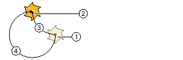

Wenn Sie einen Kreis oder Kreisbogen mit bekanntem Radius programmieren möchten, nutzen Sie die Funktion "Kreis Radius".
Das Werkzeug verfährt einen Kreisbogen mit dem programmierten Radius im Bearbeitungsvorschub von der aktuellen Position zur programmierten Zielposition. Das System berechnet dafür die Position des Kreismittelpunktes.
Sie können wählen, ob Sie den Kreisbogen im Uhrzeigersinn oder entgegengesetzt fahren. Unabhängig von der Drehrichtung ergeben sich jeweils 2 Möglichkeiten, von der aktuellen Position über einen Kreisbogen mit vorgegebenem Radius zur Zielposition zu gelangen.
Die Auswahl des gewünschten Kreisbogens erfolgt durch ein negatives oder positives Vorzeichen des Radius.
① | Start |
② | Ziel |
③ | Öffnungswinkel bis 180° |
④ | Öffnungswinkel größer 180° |
Öffnungswinkel
Vorgehensweise
1. | Das zu bearbeitende ShopTurn-Programm ist angelegt und Sie befinden sich im Editor. | |
| | 2. | Drücken die Menüfortschalt-Taste und den Softkey "Gerade Kreis". |
3. | Drücken Sie den Softkey "Kreis Radius". |